|
PREFEITO SERAFIM CORRÊA VISTORIA AS
OBRA DA LAGOA DO JAPIÍM
No último dia 03 de julho
(quinta-feira), o Prefeito de Manaus Serafim Corrêa foi verificar
de perto o andamento das obras do Parque da Lagoa do Japiím.
Acompanhado do vice-prefeito Mario Frota, da Secretária de Meio
Ambiente Luciana Valente e outras autoridades, foi recepcionado
pelo diretor-presidente da Fergel, Sr. José Carlos Penatti, que
apresentou o estado de execução das obras para o prefeito.
A visita que estava agendada para as
nove horas da manhã iniciou sem atrasos e o prefeito Serafim
caminhou até o setor do parque onde serão construídas as quadras
poliesportivas e a extensão do passeio de caminhadas. |
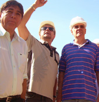
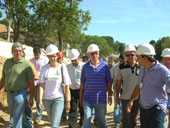
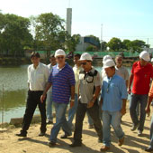
Vistoria do Prefeito
Serafim Correa na lagoa do Japiim. O diretor-presidente da Fergel
Sr. Penatti, apresentou a situação atual. |
| |
|
| |
|
| |
|
|
SISTEMA DE
CAPTAÇÃO, DRENAGEM E ESTAÇÃO DE TRATAMENTO DE ESGOSTO

|
|
Ao prefeito
Serafim foi apresentado o sistema de tratamento de águas pluviais
e de águas servidas que está sendo construído na lagoa e
implantado a risca pela Fergel a partir do projeto original de
ETEE (Estação de Tratamento Ecológico de Esgoto) desenvolvido pela
empresa JV Pires Engenharia.
O sistema de
captação de águas pluviais foi desenvolvido para evitar o
assoreamento do terreno nos períodos de chuvas intensas porque
possui declividade muito forte.
O volume de águas
na época das chuvas é um fator muito importante para a manutenção
do nível de água da lagoa. Ao mesmo sistema de captação, serão
interligadas as saídas de águas servidas de pelo menos 300
residências do entorno do parque e que destinará para a estação de
tratamento ecológico para a necessária absorção do solo e
alimentação do nível de água da lagoa.
Economia e ecologia
Segundo o
engenheiro Valim da empresa idealizadora, o sistema é inovador e
apresenta a vantagem de ser muito mais econômico do que os
sistemas tradicionais de tratamento de esgosto.
O prefeito ficou
muito interessado pelo projeto e demonstrou satisfação ao saber do
benefício e melhoria de qualidade de vida que os moradores do
entorno do parque vão ganhar após o início do funcionamento da estação de
tratamento. |
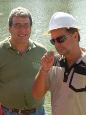
Engenheiro Valim (JV
Pires Engenharia) e o
José Carlos Penatti (Fergel): garantia de execução do projeto da estação de
tratamento conforme as especificações originais. |
| |
|
|
ETEE DO JEITO
QUE FOI PROJETADO
Segundo José
Carlos Penatti, a Fergel está se esmerando para concluir o projeto
da Estação de Tratamento Ecológico de Esgoto – ETEE
totalmente dentro das especificações. Eventuais modificações que
sejam necessárias, serão realizadas a partir das novas orientações
indicadas pelos projetistas do sistema.
|
| |
|
| |
|
| |
|
|
41 MIL METROS
QUADRADOS DE PARQUE
Embora o
cronograma inicial da obra tenha sido alterado em virtude das
fortes chuvas que caíram sobre a cidade de Manaus nesse início de
ano, os poucos dias de verão já transcorridos permitiram um bom
adiantamento das obras. Na visita do prefeito, pôde ser verificado
o trabalho de terraplenagem que estão sendo realizados no fundo do
parque onde serão construídos os campos de futebol de grama
sintética, a quadra polivalente e a estação de tratamento de
esgoto. |
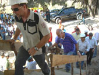
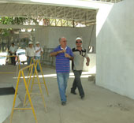
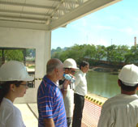
Prefeito Serafim
Corrêa conferindo a vista panorâmica da lagoa nas instalações onde
ficara o "fast-food". |
| |
|
| |
|
| |
|
|
DECK DE
ENTRADA ESTAQUEADO
A Fergel já
finalizou o estaqueamento de onde será instalado um “deck”
suspenso sobre a lagoa. A área é considerada o “hall de entrada”
do parque, e será dotado de um mirante panorâmico para a lagoa num
formato de praça.
O estaqueamento
foi realizado com a instalação de uma sonda de perfuração sobre
uma plataforma flutuante com duas grandes bóias metálicas
fabricadas com aço marítimo nas instalações industriais da Fergel.
A plataforma foi fabricada em grandes dimensões para suportar o
peso do perfurador que está estaqueando barras de aço no fundo da
lagoa com mais de 8 metros de comprimento.
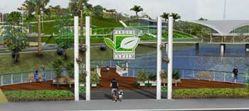
Ilustração do projeto arquitetônico que prevê o "deck" de
entrada do parque suspenso por estacas.
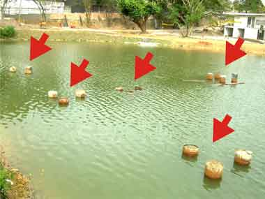
Estaqueamento de
suporte do "deck" da entrada do parque: concluído.
|
| |
|
| |
| |
|
|
PRÉDIOS
ADMINISTRATIVOS E SERVIÇOS
A estrutura
física dos prédios administrativos e funcionais onde serão
instalados os serviços de fast-food, casa lotérica, correiros,
agência bancária e outros, está quase pronta. Com previsão para as
etapas de finalização e acabamentos nos próximos trinta dias. Os
prédios funcionais e das áreas de serviço já estão com todas as
coberturas instaladas.A Fergel instalou telhas metálicas com
sistema termoacústico. |
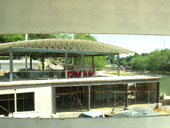
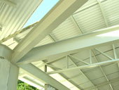
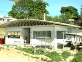
Instalações de
serviços do parque da lagoa do japiím.
|
| |
|
| |
| |
|
|
A COBERTURA
DOS PRÉDIOS DE SERVIÇOS DO PARQUE
A Fergel optou
por instalar telhas metálicas termo-acústicas em todos os prédios
do complexo administrativo e de serviços do Parque Lagoa do Japiím.
O sistema de telhas termo-acústicas que é fabricado pela Fergel
reduz a sensação térmica no interior das instalações em até 24º C.
As telhas termo-acústicas favorecem muito a redução no consumo de
energia elétrica, pois permitem o funcionamento de condicionadores
de ar com mais eficiência e menor esforço, estendendo a vida útil
do mesmo. |
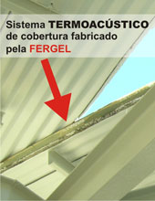

Todas as instalações
de serviços serão cobertas com telhas metálicas pré-pintadas em
sistema termoacústico para redução de ruídos e de sensação
térmica. |
| |
|
| |
| |
|
|
CONCRETAGEM EM
FASE FINAL NA UFAM
O início do verão
tem sido muito importante para a finaiização dos serviços de
concretagem dos prédios das faculdades de matemática e estatística
da Universidade de Manaus. Esta etapa da obra que exige condições
climáticas secas, encontra-se com apenas 20% do seu total por
finalizar. Isso significa que ainda ainda neste mês de julho,
deverão ser iniciadas as etapas de finalização e acabamentos das
área internas dos dois prédios. Os acadêmicos dessas duas
disciplinas deverão iniciar 2009 em salas de aula “novinhas em
folha”. |
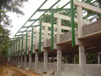
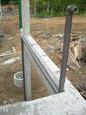
Conexão de
abastecimento para caixa contra incêndio foram concluídas. |
| |
|
| |
| |
|
|
FERGEL INSTALA
SISTEMA DE COBERTURA TÉRMICA EM GALPÃO DA CASA DAS CORREIAS
A Fergel esta
executando a instalação de cobertura térmica em um dos galpões da
Casa das Correias do bairro do Japiím. O sistema que também foi
utilizado na Lagoa do Jápiím é extremamente eficiente para a
redução da sensação térmica no interior do galpão. Com o verão
chegando pra valer em Manaus, a instalação do sistema vai melhorar
bastante a qualidade de vida no ambiente de trabalho de quem
trabalha na Casa das Correias. Sempre lembrando que a Fergel
também fabrica as telhas metálicas e monta o sistema termoacústico
em telhas novas como também em locais que já possuem a cobertura
metálica instalada. |
| |
|
| |
|
|
|
REFORMA E
COMPLEXO ESPORTIVO NO BAIRRO DA CACHOEIRINHA
A Fergel está
iniciando neste mês de julho a instalação de cobertura metálica em
uma quadra poliesportiva no bairro da cachoeirinha. O complexo
contará também com área de vestiário e sanitário. O projeto prevê
a instalação de um sistema espacial de suporte para a cobertura. O complexo deverá ser renomeado de João do Peso e é
uma obra da Prefeitura de Manaus. |
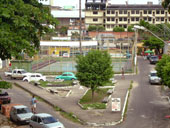
Quadra na Praça 14 que
receberá reforma com cobertura. |
| |
|
| |
|
|
|
OBRAS NA MOTO
HONDA, REXAM E CLIMAZON
A Fergel está
executando obras de fabricação e de “pipe rack” para linhas de
montagem na fabrica da Moto Honda, da Rexam, que fabrica as tampas
de alumínio e fundo de latas de refrigerante e da empresa climazon
que faz estamparia e injeção plástica. |
| |
|
| |
| |
|
|
DIVULGAÇÃO
INSTITUCIONAL DA FERGEL
Durante a visita
de vistoria do prefeito Serafim Corrêa nas obras da lagoa do japiím, o nome da Fergel, como
executora da obra esteve bastante evidente e bastante inquirido
pelos presentes. A Sra. Lene Alcântara, que é colaboradora da empresa na
área de vendas, destacou-se entre os participantes com sua contagiante
simpatia e distribuiu dezenas de conjuntos de encartes
institucionais de produtos e serviços executados pela Fergel.
|
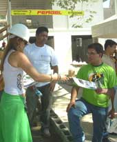
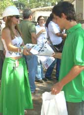
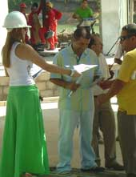 |